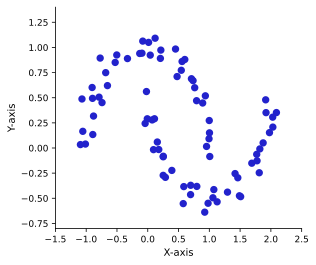
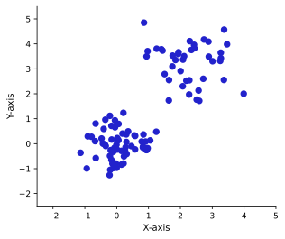

Bài tập về nhà #7
Bài toán phân cụm
Bài 1 — Phân cụm phân cấp
-
Xét hai tập dữ liệu trong Hình 1 và Hình 2 dưới đây. Với mỗi tập dữ liệu, hãy cho biết phương pháp single linkage hay complete linkage phù hợp hơn, và giải thích vì sao.

Hình 1: Tập dữ liệu 1 
Hình 2: Tập dữ liệu 2 -
Phân cụm phân cấp có thể dùng để phân nhóm văn bản theo nội dung. Giả sử mỗi văn bản được biểu diễn bằng một vector đếm từ, trong đó phần tử thứ \(i\) cho biết số lần từ thứ \(i\) xuất hiện trong văn bản.
- Lập luận tại sao khoảng cách Euclid không phải là lựa chọn tốt để đo độ bất đồng giữa hai văn bản.
- Nêu một khoảng cách thay thế phù hợp hơn và giải thích ưu điểm của nó.
-
Xét tập dữ liệu ảnh CIFAR-10* gồm các ảnh RGB 32×32 pixel thuộc 10 lớp (Máy bay, Ô tô, Chim, Mèo, Nai, Chó, Ếch, Ngựa, Tàu, Xe tải). Giả sử ta áp dụng phân cụm phân cấp trên tập ảnh không có nhãn.
Ngoài nhãn lớp, phân cụm phân cấp có thể tiết lộ thêm thông tin gì? Bạn kỳ vọng cấu trúc phân cấp ở mức cao nhất của dendrogram sẽ trông như thế nào?
* CIFAR-10 chứa 60.000 ảnh RGB 32×32 với nhãn thuộc 10 lớp.
Bài 2 — Thuật toán K-means
-
Trong K-means, ta luân phiên tối ưu hóa cách gán cụm \(C_1, \ldots, C_K\) và các tâm cụm \(\bar{x}_1, \ldots, \bar{x}_K\) để cực tiểu hóa:
\[ \min_{\bar{x}_k,\, C_k}\ \sum_{k=1}^{K} W(C_k) = \min_{\bar{x}_k,\, C_k}\ \sum_{k=1}^{K} \sum_{x_i \in C_k} 2\|x_i - \bar{x}_k\|^2. \]Chứng minh rằng thuật toán Lloyd, sau khi khởi tạo ngẫu nhiên, hội tụ đến một nghiệm cực tiểu cục bộ. Thuật toán gồm hai bước:
- Giữ nguyên \(C_k\), tính lại \(\bar{x}_k = \dfrac{1}{|C_k|} \sum_{x_i \in C_k} x_i\).
- Cập nhật \(C_k = \bigl\{x_i \mid \forall l \neq k : \|x_i - \bar{x}_l\|^2 > \|x_i - \bar{x}_k\|^2\bigr\}\) — gán mỗi điểm dữ liệu vào tâm cụm gần nhất.
Để đơn giản ký hiệu, bạn có thể dùng chỉ số cụm \(c(i)\) của điểm dữ liệu \(x_i\) để chỉ tâm cụm được gán cho nó là \(\bar{x}_{c(i)}\).
Gợi ý: Hãy chỉ ra rằng mỗi bước đều không làm tăng giá trị hàm mục tiêu \(\sum_k W(C_k)\), và vì hàm này bị chặn dưới (và số cách phân cụm là hữu hạn), thuật toán phải hội tụ. -
Cho tập dữ liệu trái cây \(\{\text{Táo, Cam, Mâm xôi, Dâu tây}\}\) với ma trận bất đồng như sau:
\(d(a,b)\) Táo Cam Mâm xôi Dâu tây Táo 0 1 5 4 Cam 1 0 4 5 Mâm xôi 5 4 0 1 Dâu tây 4 5 1 0 Trong trường hợp này, nên dùng K-means hay K-medoids? Giải thích lý do.
-
Kết quả phân cụm mong muốn là \(\{\text{Táo, Cam}\}\) và \(\{\text{Mâm xôi, Dâu tây}\}\) với \(K = 2\). Sử dụng phương pháp bạn chọn ở câu 2.2, hãy cho một ví dụ về cách khởi tạo cụ thể (chọn ngẫu nhiên từ tập dữ liệu) khiến thuật toán không đạt được kết quả mong muốn.